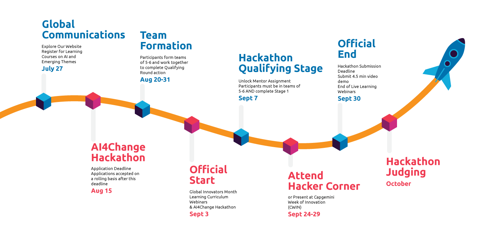

INTELIGENTNY KOSZYK
NA ZAKUPY
STUDIUM PRZYPADKU
DEEP LEARNING - INTEL MOVIDIUS - AWS
Hackathon Capgemini - AI4CHANGE
Team
Nasza motywacja

-
temat miał być związany z AI
-
nasz pierwszy wybór: obszar biznesowy dot. koszyków zakupowych
-
nasz drugi wybór: IoT i Edge Computing
-
nasz trzeci wybór: AWS
Dlaczego zakupy detaliczne?

-
...bo widzieliśmy problem: jak zrealizować rekomendowanie produktów?
-
...bo widzieliśmy szansę: dobry obszar do stosowania IoT
Coś co jest oczywiste w sklepie on-line...

...jest sporym wyzwaniem w sklepie off-line.
Jak to robią inni?

- grudzień 2016 - Amazon otwiera pierwszy sklep detaliczny pod marką Amazon Go (w wersji beta)
- wrzesień 2018 - Microsoft i Żabka prezentują koncept "sklepu jutra"
A dlaczego Edge Computing?

Wyzwania implementacyjne w przenoszeniu AI/ML do Edge:
-
rozmiary modeli
-
dostępna moc obliczeniowa
-
konsumpcja energii
-
niska dokładność prostych modeli
Po co jeszcze do tego używać AWS?
-
centralna baza danych (produkty i koszyki)
-
centralna definicja logiki biznesowej
-
monitoring działania systemu
Architektura - wersja docelowa

Architektura - PoC


Intel® Movidius™ Neural Compute Stick

Mały, energooszczędny,
w formie pendrive'a,
służy do eksperymentowania i nauki w obszarze stosowania AI w modelu Edge Computing.
Intel® Movidius™ NCS - kluczowe cechy
-
ultra-niski pobór mocy
-
konstrukcja ukierunkowana na przetwarzanie obrazów oraz AI
-
małe rozmiary
-
dostępne frameworki: TensorFlow, Caffe
-
wyniki obliczeń dostępne w czasie rzeczywistym (brak wymogu łączności z chmurą)
-
skalowalność - możliwość użycia wielu urządzeń równolegle na tej samej platformie
Jakie są możliwości Intel Movidius NCS?
Intel® Movidius™ NCS
Możliwe zastosowania:
-
detekcja obiektów
-
klasyfikacja obiektów
-
rozpoznawanie twarzy
-
przetwarzanie języka naturalnego
YOLO: wykrywanie obiektów w czasie rzeczywistym
Jak działa YOLO?
obraz wyjściowy
Jak działa YOLO?

obraz podzielony na mniejsze elementy (siatkę)
Jak działa YOLO?

każdy z elementów służy do estymacji położenia i rozmiarów prostokąta ograniczającego obiekt oraz miary ufności obliczanej na podstawie p-stwa wystąpienia obiektu
Jak działa YOLO?

każdy z elementów służy do estymacji położenia i rozmiarów prostokąta ograniczającego obiekt oraz miary ufności obliczanej na podstawie p-stwa wystąpienia obiektu
Jak działa YOLO?
każdy z elementów służy do estymacji położenia i rozmiarów prostokąta ograniczającego obiekt oraz miary ufności obliczanej na podstawie p-stwa wystąpienia obiektu
Jak działa YOLO?
każdy z elementów służy do estymacji położenia i rozmiarów prostokąta ograniczającego obiekt oraz miary ufności obliczanej na podstawie p-stwa wystąpienia obiektu
Jak działa YOLO?
każdy z elementów służy do estymacji położenia i rozmiarów prostokąta ograniczającego obiekt oraz miary ufności obliczanej na podstawie p-stwa wystąpienia obiektu
Jak działa YOLO?

każdy z elementów służy do estymacji położenia i rozmiarów prostokąta ograniczającego obiekt oraz miary ufności obliczanej na podstawie p-stwa wystąpienia obiektu
Jak działa YOLO?
każdy z elementów służy także do estymacji prawdopodobieństwa przynależności obiektu do danej klasy
Jak działa YOLO?

Jak działa YOLO?

w kolejnym kroku miary ufności dla prostokątów ograniczających obiekt są mnożone przez prawdopodobieństwa przynależności obiektu do klasy
Jak działa YOLO?
w ostatnim kroku odrzuca się detekcje, dla których wcześniej wyliczona wartość jest niższa niż zadany próg
Jak wyszkolić algorytm YOLO?
Jak przenieść wyszkolony algorytmna Intel Movidius NCS?
Jak ocenić działający algorytmna Raspberry Pi?

AWS IoT Core
-
pozwala na interakcję urządzeń IoT z chmurą
-
pozwala na dwukierunkową komunikację
-
implementuje protokoły: MQTT, HTTP, MQTT + WebSocket
-
umożliwia stosowanie paradygmatu serverless
MQTT

Komunikacja: z sensora do chmury
{
"product": "tomato"
}

AWS Lambda
-
pozwala uruchamiać niewielkie fragmenty kodu w chmurze, bez konieczności utrzymywania własnego serwera
-
obliczenia wykonywane są natychmiast
-
kod jest uruchamiany tylko w razie potrzeby

Komunikacja: z chmury do urządzenia
{
"output": {
"recommendation": "cucumber"
}
}
Jak to "wyklikać" w AWS?
Jak to "wyklikać" w AWS?
Jak to "wyklikać" w AWS?
Jak to "wyklikać" w AWS?
Jak to "wyklikać" w AWS?
Jak to "wyklikać" w AWS?
Jak to "wyklikać" w AWS?
Komunikacja z AWS IoT - biblioteka
from AWSIoTPythonSDK.MQTTLib import AWSIoTMQTTClient
class Communication:
def __init__(self, host, port, rootCAPath, \
privateKeyPath, certificatePath):
# Init AWSIoTMQTTClient
self.myAWSIoTMQTTClient = AWSIoTMQTTClient()
self.myAWSIoTMQTTClient.configureEndpoint(host,\
port)
self.myAWSIoTMQTTClient.configureCredentials(\
rootCAPath, privateKeyPath, \
certificatePath)
Komunikacja z AWS IoT - biblioteka
# AWSIoTMQTTClient connection configuration
self.myAWSIoTMQTTClient.configureAutoReconnectBackoffTime(1,\
32, 20)
# Infinite offline Publish queueing
self.myAWSIoTMQTTClient.configureOfflinePublishQueueing(-1)
# Draining: 2 Hz
self.myAWSIoTMQTTClient.configureDrainingFrequency(2)
# 10 sec
self.myAWSIoTMQTTClient.configureConnectDisconnectTimeout(10)
# 5 sec
self.myAWSIoTMQTTClient.configureMQTTOperationTimeout(5)
Komunikacja z AWS IoT - biblioteka
def connect(self):
self.myAWSIoTMQTTClient.connect()
def subscribe(self, topic, callback):
self.myAWSIoTMQTTClient.subscribe(topic, 1, callback)
def publish(self, topic, message):
self.myAWSIoTMQTTClient.publish(topic, message, 1)
Demo
Lista rzeczy do zrobienia
-
uczenie YOLO z większą liczbą różnych produktów
-
rozszerzenie funkcjonalności generowania rekomentacji
-
rozszerzenie sprzętu o baterię i obwód do jej ładowania
AWS SageMaker
Model do zastosowania - sieć Kohonena
Zbuduj własny koszyk!

- Intel Movidius Neural Compute Stick
- Raspberry Pi 3 model B+
- UCTRONICS 3.5" 480 x 320 TFT LCD
- karta micro-SD (16 GB+)
- zasilacz USB 2A
- obudowa do Raspberry Pi i ekranu 3.5”
- plastikowy koszyk na zakupy
- elementy montażowe (śruby, tuleje dystansowe, opaski zaciskowe)
Kod do pobrania oraz niniejsza prezentacja: https://github.com/ai4change-yolo/
Dziękujemy!
Marcin Stachowiak
Piotr Szajowski